＃釜山四天三夜行程推薦、概覽
Day1：出發點→金海→西面地下商街
第一站：西面地下街 서면 지하도상가
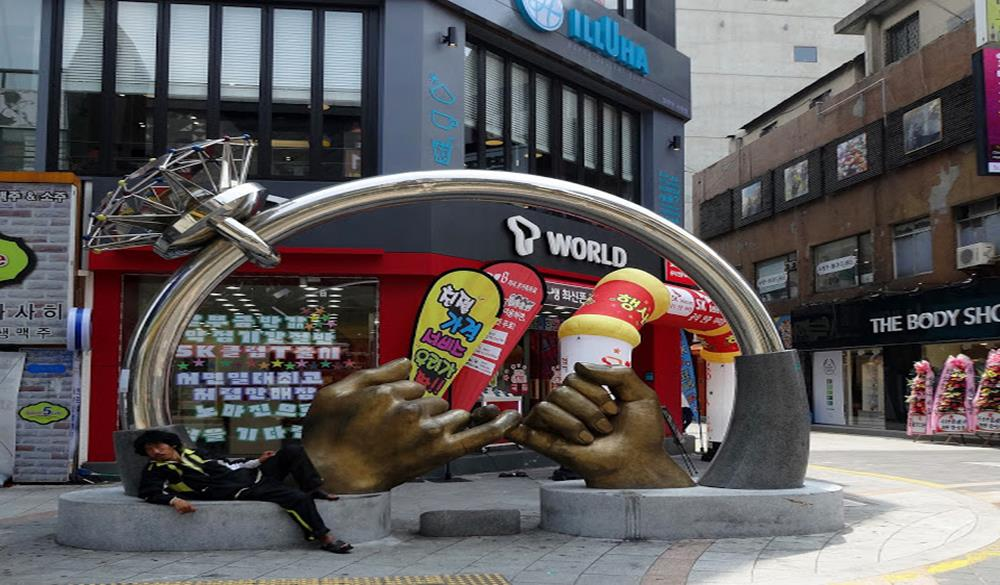
往地面行走會有很多特色餐廳，小吃攤及各式各樣的衣服和各大連鎖品牌的化妝品店。而走到「西面」的地下街，長長的地下街充滿著不同的店家，有販售衣服、鞋子、內衣、還有個大美妝品牌，應有盡有。
- 地址：釜山釜山鎮區中央大路
- 交通：地鐵1.2號線西面站。
- 營業時間：10:00-22:30（每月第一週二休息）
- 建議停留時間：4小時
Day2：二妓台→海雲台海水浴場→汗蒸幕→廣安里看夜景 第一站：二妓台 이기대
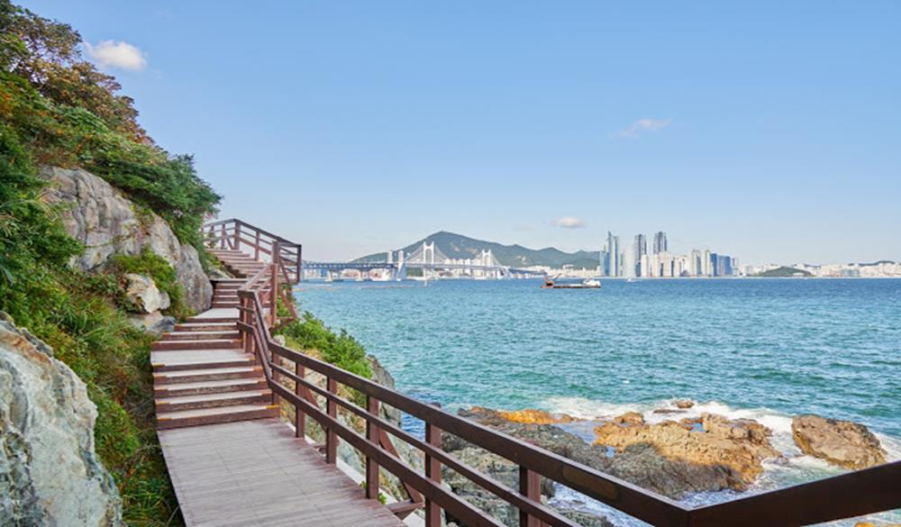
原名「二妓台都市國家公園」是一座長約2公里的海上公園，由模樣奇特的岩石構成，這裏的特別之處在於途中的岩石上有恐龍的腳印，也因此促成了二妓台都市自然公園的出現。
- 地址：釜山市南區龍湖3洞山25
- 交通：地鐵2號線慶星大、慶釜大站3.5號出口，換乘20號、22號或131號公車至二妓台公園。
- 建議停留時間：3小時
第二站：海雲台海水浴場 해운대해수욕장
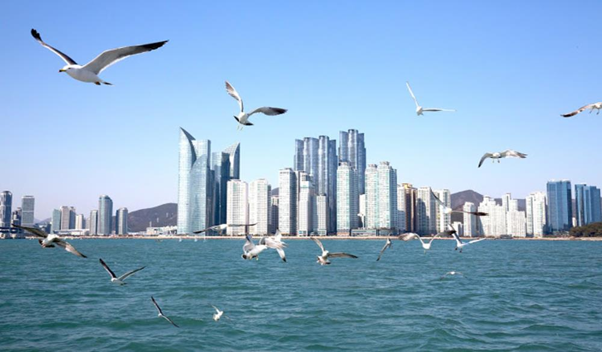
說到釜山就不得不提起海雲台，海雲台幾乎已經成為釜山的代名詞了。每年夏天大批的韓國人就會湧入海雲台享受夏日時光，幾乎整個海灘都被陽傘跟人潮佔據，可以說是釜山行必定的朝聖地。
- 地址： 釜山市海雲台中1洞1015
- 交通：地鐵2號線海雲台站3、5號出口，往海雲台海水浴場方向步行10分鐘左右就可到達。
- 建議停留時間：4小時
第三站：汗蒸幕 한증막
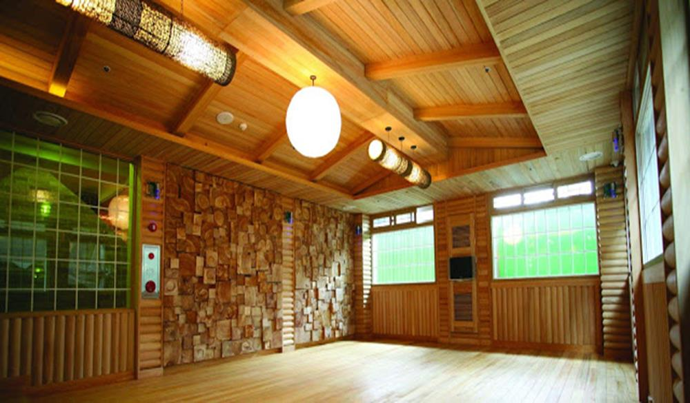
來到韓國，要是沒來個汗蒸幕總覺得缺少了些什麼，透過汗蒸幕讓身體充分循環，並在之後包著綿羊毛巾吃著煮雞蛋，真的是無比地享受啊！
- 地址： 釜山廣域市海雲台區Centum南大路 35（新世界百貨公司）。
- 交通：地鐵2號線Centum City站地下通路連接至新世界百貨
- 建議停留時間：2.5小時
第四站：廣安里海水浴場 광안리해수욕장
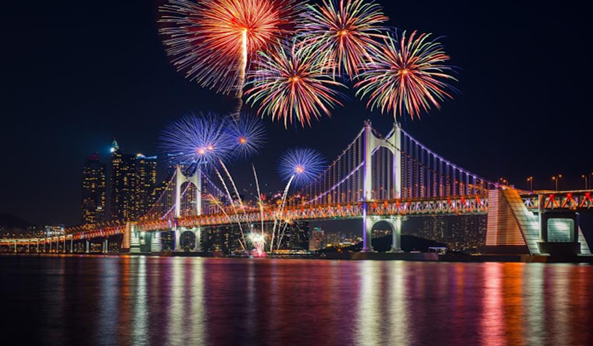
有「鑽石橋」之稱的廣安大橋，當夜晚來臨，橋上的所有夜燈亮起，讓看過的人都說美，晚上的廣安里海水浴場可是釜山知名的夜景處，但白天的廣安里海水浴場景色也別有一番風味唷！
- 地址：釜山市釜山鎮夫釜田2洞573-1
- 交通：地鐵2號線廣安站3或5號出口，步行10分鐘左右就可到達。
- 建議停留時間：2小時
Day3：甘川洞文化村→太宗台→札嘎其市場→南浦洞→龍頭山公園 第一站：甘川洞文化村 감천문화마을
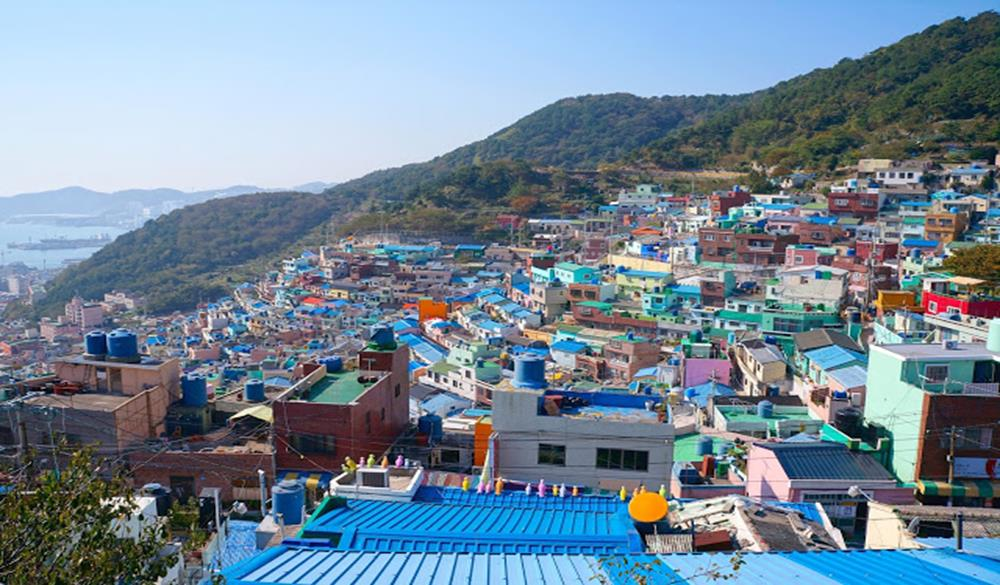
有韓國「馬丘比丘」和「聖托里尼」稱號的甘川洞文化村是釜山必訪的熱門景點，尤其是與小王子和狐狸拍照的景點更不能錯過！建議可以在入口購買集章的地圖，裡面包含了完整的景點介紹和遊玩路線圖，全部印章都收集完還可以獲得兩張明信片喲！
- 地址：釜山沙下區甘川洞
- 交通：地鐵1號線土城站6號出口右轉3分鐘，搭乘2號小巴往甘村文化村。
- 建議停留時間：3小時
第二站：太宗台 태종대
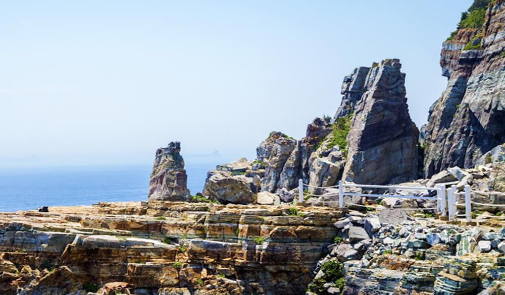
不同於海雲台的沙灘地形，太宗台這邊則是以礫石灘和侵蝕海岸聞名。長時間接受海浪侵蝕的結果，造就其直落海的峭壁絕景，其中更以神仙岩最為著名，除了可以看到奇岩怪石與大海的美景之外，還可以見識到韓國人不畏粉身碎骨的大無畏精神。
- 地址：釜山市影島區東三洞29-1太宗台由園區
- 交通：地鐵1號線南浦站6號出口，步行200公尺左右到影島大橋汽車站換乘66、88或101號公車，21站後（一小時）在太宗台車庫地站下車即可
- 營業時間：10月-4月9:00-17:00 / 5月-9月9:00-18:00（閉館前30分鐘停止入園）
- 建議停留時間：2小時
第三站：札嘎其市場 자갈치시장
以沿海城市聞名的釜山怎麼能不品嚐海鮮美食呢！？札嘎其市場為釜山著名的魚市場，若是想要品嚐最新鮮的海鮮料理，絕對不能錯過。
- 地址：釜山市中區南浦洞街4街37-1
- 交通：地鐵1號線札嘎其站10 or 南浦洞2號出口，往昌善丁字路口方向步行5分鐘即可。
- 營業時間：05:00-22:00（全年無休）
- 建議停留時間：2小時
第四站：南浦洞 남포역
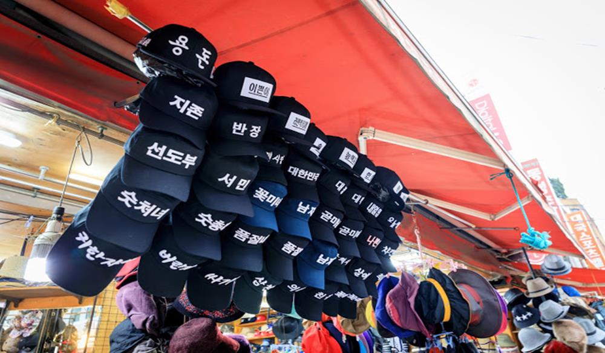
南浦洞之於釜山，就如同明洞之於首爾。以光復路為主軸，鄰近一帶充斥著各式各樣的流行購物商品，無論是在地韓國人或是外地觀光客，若是想要替自己治裝點的什麼，第一個想到的絕對就是它了。
- 交通：地鐵1號線南浦洞站1號出口，步行約5分鐘。
- 營業時間：10:30-20:00
- 建議停留時間：2.5小時
第五站：龍頭山公園 용두산공원
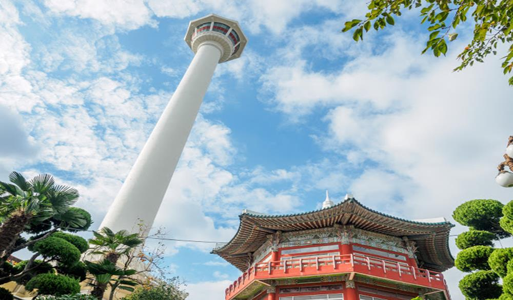
釜山地標釜山塔就位於龍頭山公園內,，不過最重要的是南浦洞有手扶梯可以直搭公園。對於想一覽釜山港景色又不想爬山的人來說真是一大福音呀。
- 地址：釜山市中區中央洞7街
- 交通：地鐵1號線南浦站1or 3 or 7號出口出站。
- 營業時間：4-9月08:30-22:00/10-3月09:00-22:00
- 建議停留時間：1.5小時
Day 4：樂天百貨光復店→國際市場→金海→回程 第一站：樂天百貨光復店 롯데백화점부산광복점
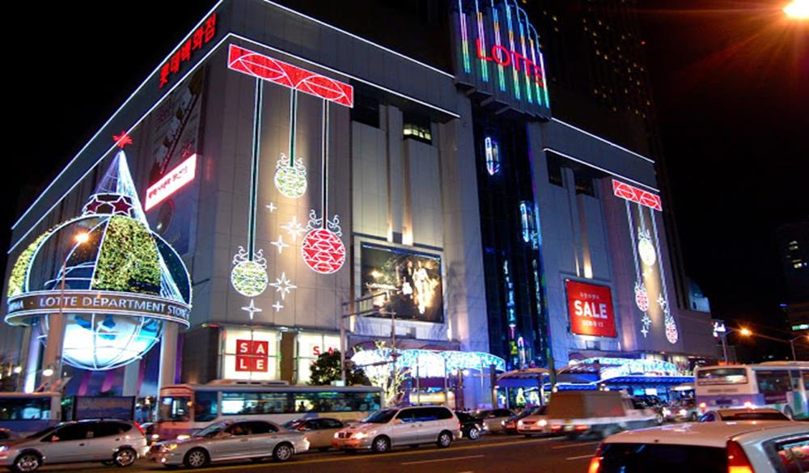
回國前一定要採購齊全呀！位在南浦洞的樂天百貨不只交通方便、商品應有盡有，頂樓的空中花園還可以一覽釜山城市美景，連海景也看得到唷！
- 地址：釜山市中區中央洞 7街
- 交通：地鐵一號線南浦洞地鐵站的10號出口連接至樂天百貨光復店B1。
- 建議停留時間：3小時
第二站：國際市場 국제시장
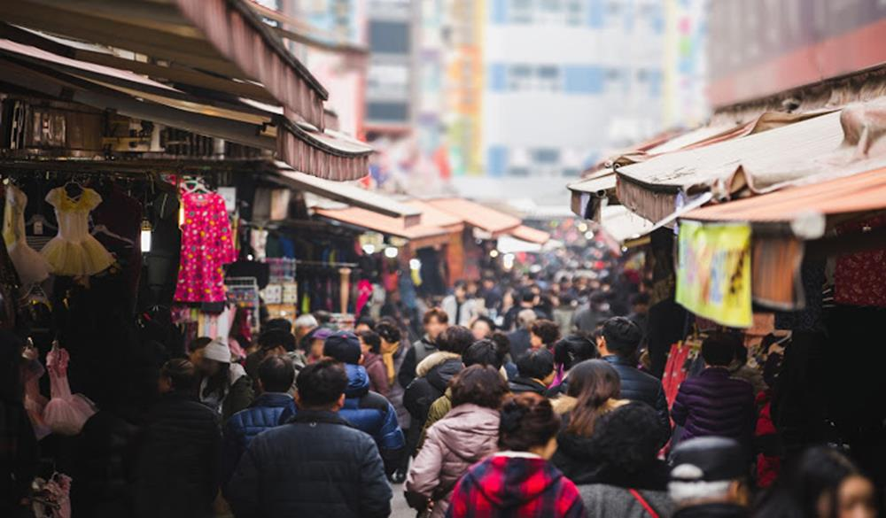
如果說南浦洞是釜山的明洞，那麼國際市場就是釜山的南大門了。那麼為什麼叫國際市場呢？原因就在於豐富的商品，從新產品到二手貨，想要什麼就有什麼。
- 地址：釜山市中區新昌洞4街
- 交通：地鐵1號線札嘎其站7號出口，步行到B&C點心店與KFC之間的小路，往前經過釜山銀行，左側的巷子就是美食街。
- 建議停留時間：2小時